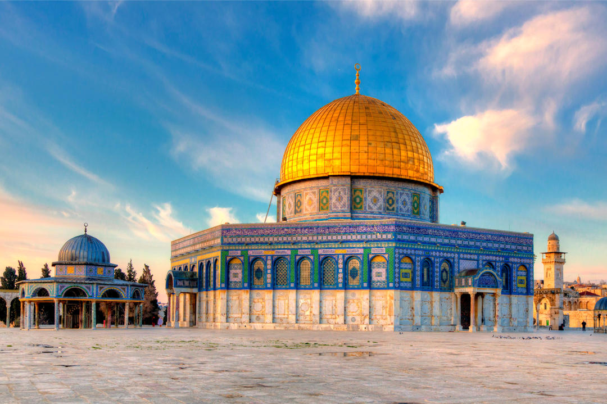

Основные термины и понятия ислама
Адат – обычаи, правила поведения, принятые той или иной группой людей или правила, действующие в определенной местности. Адат может играть ведущую роль в регулировании брачно-семейных, наследственных и некоторых гражданско-правовых отношений среди мусульман.
Азан (от арабского азана – извещать, призывать) – призыв на молитву, возвещаемый муэдзином или имамом.
Азхар (блестящий) – мечеть и мусульманский университет в Каире. При Азхаре функционируют Академия исламских исследований и ряд других религиозных институтов и учреждений.
Айят – коранический стих.
Акд – в мусульманском праве различные виды соглашений о взаимных обстоятельствах, в том числе между человеком и Богом.
Акида (вера, догма) – собрание основных догматов ислама, его символ веры. Основные суннитские догматы таковы: вера в существование Аллаха, его единство и единственность, его вечность и всемогущество, в творение им человеческих поступков: вера в пророка Аллаха Мухаммада; вера в священные книги, в вечность, в несотворенность Корана; вера в воскресение мертвых, в суд божий, в существовании ада и рая.
Акика – волосы, состриженные с головы новорожденного.
Акл – разум, четвертый корень права у шиитов-джафаритов.
Аль-Кадр – предопределение.
Амир аль-муминин – «повелитель верующих», титул халифа.
Ассасины (от хашиши – употребляющие гашиш) – европейское название последователей одного из ответвлений исмаилитов.
Ахл из-зимма – христиане, иудеи и сабии, заключившие договор с мусульманами и находящиеся под их покровительством.
Бурка – традиционная одежда женщин-мусульманок.
Символика мусульман:
Бог в представлении мусульман(не имеет ни образа, ни рода):

Исламский храм:
